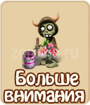

Получено: файл; исходный URL. Исходный файл из каталога задания; авторство изображения отдельно не установлено. Страница: источник.

Больше внимания
ВКонтакте; дата публикации и редакции не установлена- Тип
- Квест или линейка
- Версия и дата
- ВКонтакте; дата публикации и редакции не установлена
Данные по источнику · ВКонтакте, ZOMBIA · дата публикации и редакции не установлена
Предварительно: Содержимое списка; цели, диалоги и награды приведены в том виде, как опубликованы. Отдельная страница не обязательно проверена. Версия и дата требуют сверки.. Требуется сверка.
- Текст карточки на странице каталога
- Описание квеста : "Почти каждые три дня ты отчаливаешь со своей командой на острова, привозишь полные трюмы сокровищ, каждый раз мы тебя терпеливо ждем и взамен ничего не просим, но не в этот раз..." Ц ели квеста: 1. Продай 250 лилий со склада 2. Свари 25 розовой краски 3. Открой 20 мешков своих кладоискателей Награда: 1. 1 Полярный носок 2. 1 Носок изобилия Квест пройден: Буся все продолжала возмущаться, а Голубь, Чудовище, Заяц-побегаец и Слон кивали ей в подтверждение
Данные по источнику · браузерная игра; платформа и редакция требуют сверки · дата в URL статьи; время последней правки не установлено
Предварительно: Фанатский источник; текст сопоставлен с описанием существующего квеста, независимость и соответствие редакциям не установлены.. Требуется сверка.
- Цели и пропуск
- 1. Продай 250 лилий со склада. Можно пропустить за 5 | 2. Свари 25 Розовой краски Можно пропустить за 5 | 3. Открой 20 мешков своих кладоискателей. Можно пропустить за 10
- Награда согласно статье
- 1 Полярный носок + 1 Носок изобилия
- Оговорка
- Цветные значки цены пропуска в статье показывают зомбаксы; исходное перечисление наград сохранено отдельно от других источников — возможны разночтения.
Связанные сущности
нет проверенных связей — требуется сверка.